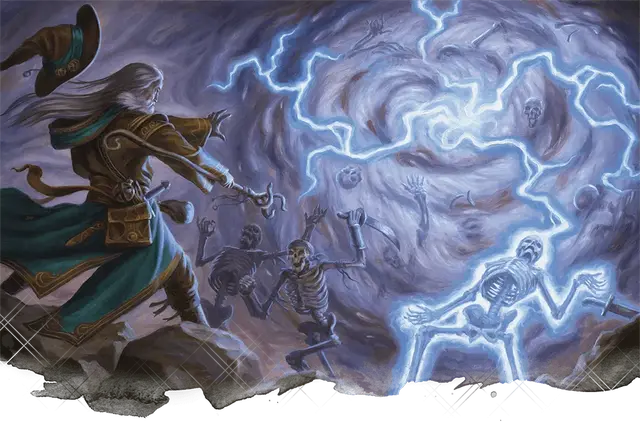

Сфера бури
Storm Sphere
4 уровень, Воплощение

Время сотворения 1 действие
Дистанция 150 футов
Компоненты В, С
Длительность Концентрация, вплоть до 1 минуты
Классы Волшебник, Чародей
В указанной вами точке в пределах дистанции заклинания возникает сфера завихряющегося воздуха радиусом 20 футов. Сфера существует, пока действует заклинание. Все существа, оказавшиеся внутри сферы в момент появления или оканчивающие свой ход внутри сферы, должны совершить спасбросок Силы, иначе получат 2к6 дробящего урона. Пространство сферы считается труднопроходимой местностью.
Пока действует заклинание, вы можете бонусным действием вызвать разряд молнии, который устремится из центра сферы к выбранному вами существу в пределах 60 футов от центра сферы. Совершите дальнобойную атаку заклинанием. Атака совершается с преимуществом, если цель находится внутри сферы. При попадании цель получает 4к6 урона электричеством.
Существа в пределах 30 футов от сферы совершают с помехой проверки Мудрости (Восприятие), связанные со слухом.
На больших уровнях. Если вы накладываете это заклинание, используя ячейку 5-го уровня или выше, то урон каждого эффекта увеличивается на 1к6 за каждый уровень ячейки выше 4-го.